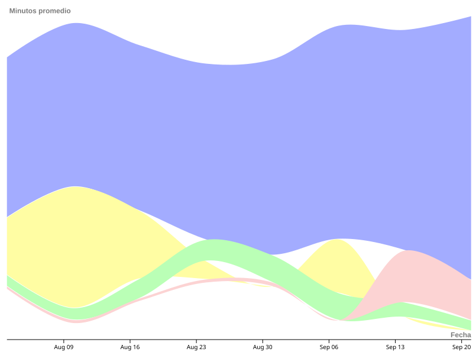

Visualización de información · TP datos personales
Consistencia y productividad personal entre agosto y septiembre
Una exploración visual de cómo se distribuyó mi tiempo productivo entre universidad, proyecto personal, ejercicio y lectura.
¿Cómo se distribuyó mi tiempo productivo?
La composición diaria permite comparar el peso relativo de cada actividad a lo largo del período.
- Universidad
- Proyecto personal
- Ejercicio
- Lectura

Los datos son un registro personal reconstruido a partir del calendario semanal, tareas realizadas y hábitos recordados. La visualización prioriza patrones de consistencia antes que precisión minuto a minuto.
¿Cómo evolucionó el promedio diario por actividad?
Cada área muestra la evolución semanal de los minutos promedio diarios. Las etiquetas externas aclaran las variables del gráfico: semana de inicio y minutos promedio diarios.
Eje horizontal: semana de inicioMedida: minutos promedio diariosActividades: Universidad, proyecto personal, ejercicio y lectura

¿Cómo cambió la intensidad de cada actividad?
Los heatmaps muestran los minutos diarios dedicados a cada actividad, organizados por semana calendario y día de la semana.
¿Cómo varió la productividad diaria entre agosto y septiembre?
El boxplot resume la distribución de los minutos productivos diarios y permite contrastar nivel típico, dispersión y valores extremos entre ambos meses.